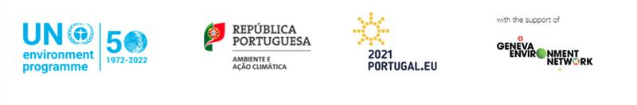
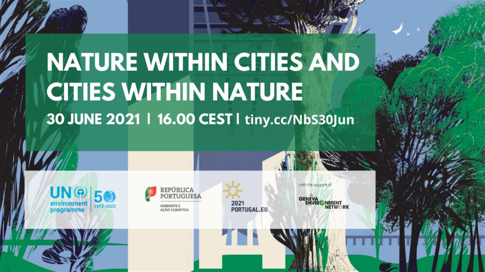

This high-level event, co-organized by the United Nations Environment Programme and the Portuguese Presidency of the Council of the European Union (EU), with the support of the Geneva Environment Network, will focus on exploring the multiple benefits of Nature-based Solutions (NbS) for cities, highlighting opportunities and challenges to advance and scale up NbS, from local action to global solutions, accelerating impact in 2021 and beyond.
- Nature-based Solutions and Cities
- About the High-Level Event
- Agenda
- Registration
- Video
- Documents
- Links

Nature-based Solutions and Cities
The COVID-19 pandemic is only a prelude to the looming climate and biodiversity crisis. The UN Secretary General has called 2021 “a critical year to reset our relationship with nature” and for setting foundations for the transformations of sectors, systems, and economies. Nature offers a range of solutions that could effectively address climate change and reduce the impacts of extreme weather events. It provides crucial ecosystem services, and its inclusion in national plans and strategies could lead to widespread sustainable and cost-effective climate action. As the climate crisis intensifies and extreme weather events continue to increase in frequency and severity, we need to scale up NbS. These encompass a broad range of actions that harness the power of nature for sustainable development, thus delivering benefits for climate resilience, healthy populations, sustainable economies, green jobs and biodiversity conservation.
Forests are one of the best examples of NbS, as well as multiple benefits for jobs, biodiversity, and health. Forests deliver a range of important ecosystem services to urban dwellers: mangroves protect coastal cities from storm surges; forested catchments provide clean water and store carbon; tree-lined streets reduce the urban heat effect and noise pollution; city parks connect people to nature, provide islands of biodiversity and lend aesthetic appeal; urban wetlands and parks increase water infiltration, reducing flood risks; and urban farms reduce food miles and connect people to the food they eat. For example, 90% of the world’s cities rely on forested watersheds for their water supply, yet 40% of the world’s major watersheds are at risk of erosion, forest fires and water stress, reducing their capacity to provide high-quality water to cities.
Within cities, NbS such as tree covered areas, along streets, or in parks and wetlands, provide multiple benefits which include natural shading, thereby reducing urban heat island effects and cooling needs; managing run-off water with fewer flooding episodes; and improving health and well-being, both directly and through recreational opportunities. Around cities, NbS interventions can help with watershed management, recreational space, managing wildfires, reducing, and capturing CO2 emissions, and reducing the impact of sand and dust storms.
Moreover, cities are at the forefront of both the impacts of, and responses to, major environmental crises, as they concentrate millions of people into locations that can be highly vulnerable to disaster. They allow for economies of scale, delivering services to large numbers of people, driving economic growth and innovation, and creating jobs. But they also expose large, vulnerable populations to climate change, environmental hazards, and latent stressors such as scarce resources. In essence, the triple crises of climate change, pollution and biodiversity loss are particularly relevant for cities and the people who live in them.
There is now increasing attention and momentum for NbS, as exemplified by the 2019 Climate Action Summit NbS Manifesto, the 2020 UN Biodiversity Summit (including the Leaders’ Pledge for Nature), the UN Decade for Ecosystem Restoration (2021-2030) and the recently launched IUCN NbS standard. The building blocks are there, but NbS need to move into mainstream discussions and generate actions that affect the realities of the post-COVID world. NbS should be fully integrated into the European Green Deal´s implementation and incorporated in its nine policy areas, which range from sustainable agriculture to the circular economy and the biodiversity strategy.
At the EU Environment Council on the 10th June, Ministers adopted Council Conclusions on forging a climate-resilient Europe, with the aim of capturing the essential elements of all the different dimensions of the new EU Strategy on Adaptation to Climate Change. This new strategy outlines a long-term vision for the EU to become a climate-resilient society that is fully adapted to the unavoidable impacts of climate change by 2050. It emphasizes NbS, adaptation action at the local level, the need for enhanced adaptation mainstreaming and the necessary financing for these adaptation measures and underlines a new international dimension.
About the High-Level Event
This high-level event is co-organized by the United Nations Environment Programme and the Portuguese EU Presidency, with the support of the Geneva Environment Network.
The event’s objectives will be to demonstrate the value of Nature-based Solutions (NbS) for cities, from developing climate resilient pathways to harnessing a broad range of environmental and socio-economic benefits, the event will highlight local participatory approaches as bases for long-term success, look at ways to scale impact with innovative approaches and call for genuine action across different scales and sectors.
The event will focus on exploring the multiple benefits of NbS for cities, highlighting opportunities and challenges to advance and scale up NbS, from local action to global solutions, accelerating impact in 2021 and beyond.
The event starts with a high-level panel (16:00-16:30 CEST) which will discuss how the application of NbS can provide long-term social, ecological and economic benefits.
The second session (16:30-17:30 CEST) features two technical panels with a focus on implementation challenges and opportunities as well as models for scaling up NbS from local action to global solutions.
Agenda
Opening Remarks
- H.E. João Pedro MATOS FERNANDES, Portuguese Minister for the Environment
- Inger ANDERSEN, Executive Director, UNEP
Multiple Benefits ofNbS
- H.E. Ana ABRUNHOSA, Portuguese Minister of Territorial Cohesion
- H.E. Svenja SCHLUZE, German Federal Minister for the Environment, Nature Conservation and Nuclear Safety (Video)
- H.E. Andrej VIZJAK, Slovenian Minister of the Environment and Spatial Planning (Video)
Opportunities and Challenges to AdvanceNbS
- Philippe TULKENS, acting Head of Unit, DG Research & Innovation, Healthy Planet Directorate, European Commission
- Ana DAAM, Head of Division of Sustainable Finance and Adaptation, Portuguese Environment Agency
- Rosário OLIVEIRA, Researcher, Institute of Social Sciences (ICS), University of Lisbon
From Local Action to Global Solutions: Models for Scaling upNbS
- Duarte D´ARAÚJO, Landscape Architect, Lisbon Municipality
- Angela CRUZ GUIRAO, Director of Green and Sustainable Development, Campinas City Hall
Q&A Session
Wrap up by Moderators
- Susana NETO (University of Lisbon) and Catarina ROSETA-PALMA (ISCTE-IUL)
Registration
The event will take place online. Kindly register directly on the Webex platform.
Video
In addition to the live WebEx and Facebook transmissions, the video will be available on this webpage.
Documents
Links
- Portuguese EU Presidency | Nature Within Cities and Cities within Nature
- The Geneva Environment Network update on Nature-based Solutions provides relevant information and the most recent resources, news and articles from the various organizations in international Geneva and other institutions around the world.
- NbS contributions platform
- Common approach to integrating biodiversity and nature-based solutions for sustainable development into the United Nations policy and programme planning and delivery | UN CEB | May 2021
- UNEP and nature-based solutions | UNEP | September 2020

SOURCE: GENEVA ENVIRONMENT NETWORK